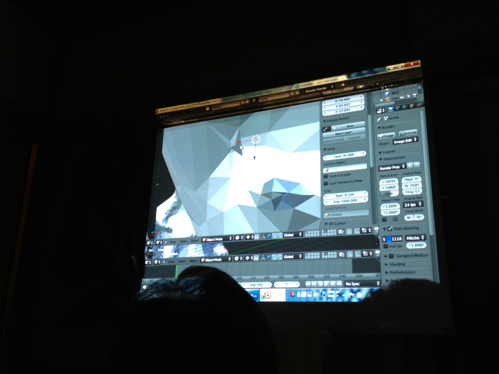

123Dカレーパーリー in ぬる舗
概要
Autodesk社の写真から3Dモデルを起すツール
123Dに興味があったりする人がぬる舗に集まって
@tan_go238 のカレーに舌鼓をうちながら
その場を3D化したりしていました。
タンドリーチキン美味しい。
123Dとは
これ。
の、特に今回はこちらを使用。
iPad(要iOS5.0)用アプリ
ぬる舗カレーパーリー現場を123Dで3D化
まず、カレーを用意したテーブルをiPad + 123DCatch for iPad で激写。
待つこと3分ほどで、123D上でのパーリーごたつ on Windowsスレート上の123Dアプリケーション。この時点で神々しい。
ポリゴン境界を表示
モデルを123Dからobj形式で出力してBlenderに入れてみたところ。

Blenderから、SketchFabというWebGLでモデルを表示するサービスで公開。
http://sketchfab.com/show/eBRTjD5avKL4XnZLmoiTuIneXdc *要WebGL
まわすこともできる！
@neko_manma1 さんが公開に使ったサービス、SketchFabはこちら。
Blenderのプラグインが公開されており、
@neko_manma1 さんがあっというまにぬる舗モデルをupしていた。
もう一丁
@mouri45 さんが持参してたスライムナイトのフィギュアを123Dでいじることに。
こたつに持参のろくろをセットして、スライムナイトが乗った箱を浮かせつつiPadを固定してまわしながら撮影。
まわるのはiPad側。
123Dで表示したところ。